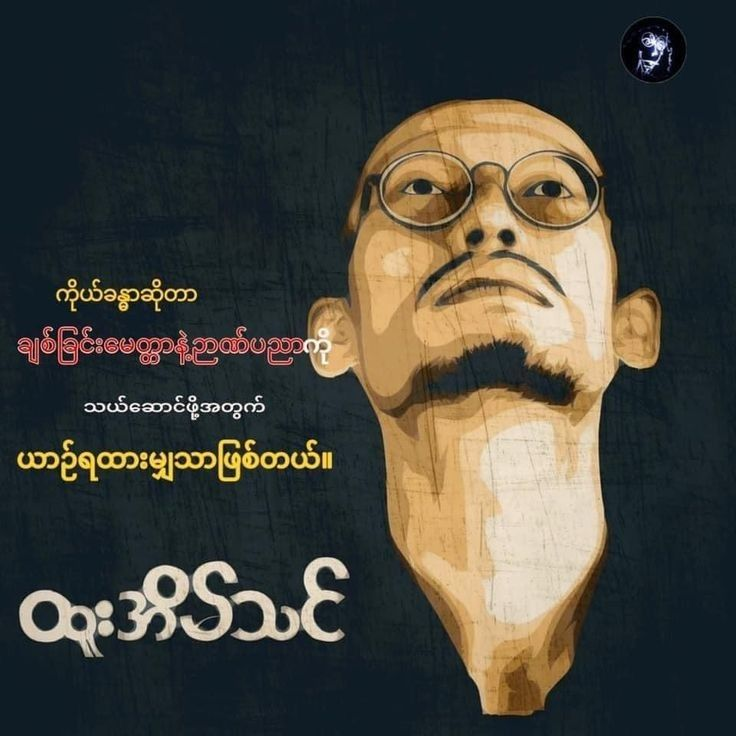

 |
အပန်းဖြေကဗျာဉယျာဉ် |
|
| ဗေဒါပန်းလေးတွေလို လောကဓံကို အံတုနိုင်ပြီး စိတ်ဓာတ်သန်မာ ကြသူတွေ ဖြစ်ကြပါစေ။ ဆရာဒီကဗျာမရေးခင်လေးက ဥရောပမှာ နိုင်ငံကြီးတွေဟာ မိမိတို့ ပိုင်ဆိုင်တဲ့ စစ်လက်နက် အမျိူးမျိုးကို တစ်နိုင် ငံနဲ့ တစ်နိုင်ငံ အပြိုင်ကြွားဝါပြီး ပြိုင်ဆိုင်နေကြပါတယ်။ ဒါကို ဆရာက ကြည့်ပြီး "သူ့ကိုယ်သူလျှင် ဘာထင်လေ မသိ" ဟု ရေးပါသည်။ သူတစ်ပါး အတင်းကို ပြောဆိုကဲ့ရဲ့နေသော မိမိကလည်း ဘာမှ မဟုတ်ပါဘူးဟု သံဝေဂရစွာ ရေးဖွဲ့ပေးခဲ့ပြီး ကဗျာ ဖတ်သူတို့ကို သွန်သင်သွားသော ကဗျာတစ်ပုဒ်ဖြစ်ပါလေသည်။ |
ပန်းခဲ့သည်ပဲ |
ဆရာဇော်ဂျီ |
|
"ယောက်ျားကောင်းတို့ ဇွဲလို့လဖြင့် အောင်ပန်းခူးဆွတ်နိုင်စေသတည်း" ငါ့အား ဖုံးလွှမ်းထားသော လကွယ်သန်းခေါင် ဤမိုက်မှောင်တွင်းမှနေ၍ အနိုင်မခံ အရှုံးမပေးတတ်သော ငါ၏စိတ်ကို ဖန်ဆင်းပေးသည့် နတ်သိကြားတို့အား ငါ ကျေးဇူးဆိုပါ၏။
လောကဓံတရားတို့၏ ရက်စက်ကြမ်းကြုတ်သော လက်ဆုတ်တွင်းသို့ ကျရောက် နေသော်လည်း ငါကားမတုန်လှုပ်။ မငိုကြွေး။ ကံတရား၏ ရိုက်ပုတ်ခြင်း ဒဏ်ချက် တို့ကြောင့် ငါ့ ဦးခေါင်းသည် သွေးသံတို့ဖြင့် ရဲရဲနီ၏။ ညွတ်ကား မညွတ်။
ဤလောဘဒေါသတို့ ကြီးစိုးရာဌာန၏ အခြားမဲ့၌ကား သေးခြင်းတရားသည် ကြောက်ဖွယ်ရာ ငံ့လင့်လျက်ရှိ၏။ သို့သော်လည်း ငါ့အား မတုန်လှုပ်သည် ကိုသာ တွေ့အံ့။
သုဂတိသို့သွားရာ တံခါးဝသည် မည်မျှ ကျဉ်းမြောင်းသည် ဖြစ်စေ၊ ယမမင်း၏ ခွေးရေ ပုရပိုက်၌ ငါ့အပြစ်တို့ကို မည်မျှပင်များစွာ မှတ်သားထားသည်ဖြစ်စေ ငါကား ဂရုမပြု။ ငါသာလျှင် ငါ့ကံ၏ အရှင်သခင် ဖြစ်၍ ငါသာလျှင် ငါ့စိတ်၏ အကြီးအကဲ ဖြစ်လေသည်။ |
ပျဥ်းမငုတ်တို |
မင်းသုဝဏ် (၁၀ ဖေဖော်ဝါရီ၊ ၁၉၀၉ – ၁၅ ဩဂုတ်၊ ၂၀၀၄) သည် မြန်မာနိုင်ငံသား စာရေးဆရာ၊ ကဗျာဆရာတစ်ဦး ဖြစ်ပြီး ခေတ်စမ်းစာပေကို ဦးဆောင်ခဲ့သူများအနက် တစ်ဦး ဖြစ်သည့်အပြင်၊ မြန်မာနိုင်ငံ၏ နဝမမြောက် သမ္မတ ဦးထင်ကျော်၏ ဖခင်လည်း ဖြစ်သည်။ ငယ်ဘဝ မင်းသုဝဏ်ကို ဟံသာဝတီတိုင်း (ယခု ရန်ကုန်တိုင်း)၊ ဟံသာဝတီခရိုင်၊ ကွမ်းခြံကုန်းမြို့တွင် ကုန်သည်များဖြစ်ကြသော ဦးလွမ်းပင်နှင့် ဒေါ်မိတို့က ၁၉၀၉ ခုနှစ်၊ ဖေဖော်ဝါရီလ (၁၀) ရက်၊ ဗုဒ္ဓဟူးနေ့တွင် မွေးဖွားခဲ့သည်။ မွေးချင်း (၇) ယောက်တွင် ဒုတိယမြောက်ဖြစ်ပြီး မွန်-မြန်မာမျိုးရိုးဖြစ်သည်။ အမည်ရင်းမှာ ဦးဝန်ဖြစ်ပြီး ရက်ချုပ်အရ ငယ်မည်မှာ မောင်လှမောင် ဖြစ်သည်။ အရပ်ထဲတွင် မောင်လှမောင်အမည်ရှိသူများမှာ အများအားဖြင့် ဆိုးကြ၍ မောင်လှဝံ ဟု အမည်ပြောင်းသည်။ မန္တလေးပုဏ္ဏား ဆရာညွန့်က ဇာတာဖွဲ့ပေးသည်။ ဘုန်းကြီးကျောင်းတွင် ဆရာတော်က စိန်ဝံ ဟူ၍ လည်းကောင်း အရပ်ထဲမှ ဦးရွှေဒုံးဆိုသူက ခွေးဝံ၊ ဝက်ဝံ ဟူ၍လည်းကောင်း ချစ်စနိုးခေါ်ကြသည်။ မြို့အနီးတွင် ရွှေဘိုမှ ပြောင်းလာသူများနေထိုင်သည့် ရွှေဘိုတန်းရှိသည်။ ငယ်စဉ်က အစားကောင်း၊ အသားညိုပြီး ရွှေဘိုတန်းက မဲမဲဝဝ၊ ထောင်ထောင်မောင်းမောင်း ငပန်ဆိုသူနှင့်တူသဖြင့် အချို့က ငပန် ဟူ၍လည်း ခေါ်ကြသည်။ နောင်တွင် မောင်ဝံဟုသာတွင်၍ မိမိစိတ်ကြိုက် ဝ, ကို န,ငယ် သတ်ပြီး မောင်ဝန် ဟု ပြင်သည်။ [၁] |
| image |
အာဇာနည် ဗိမာန်လေးချိုးကြီး |